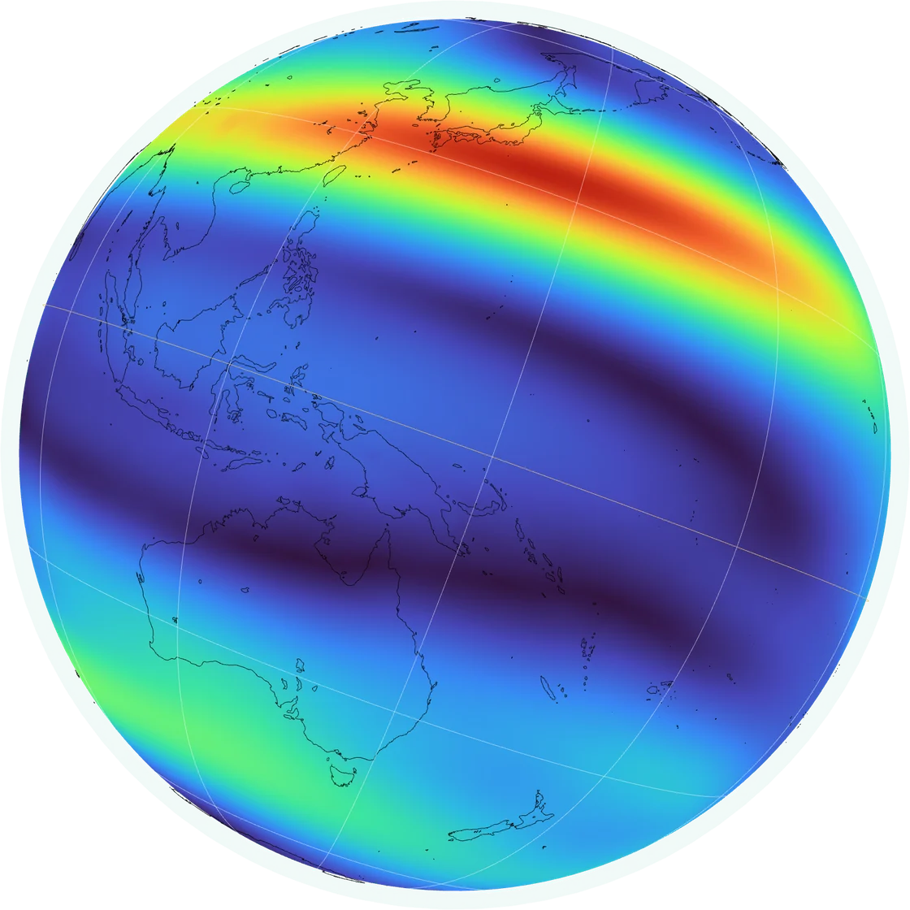
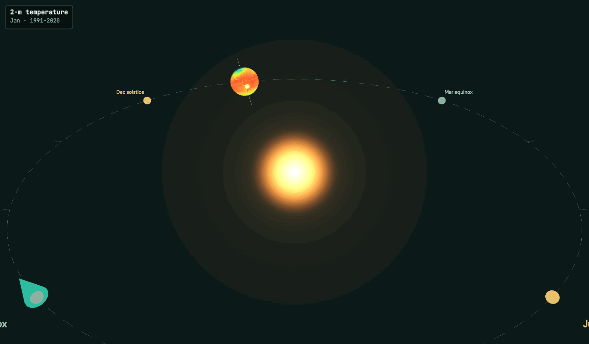
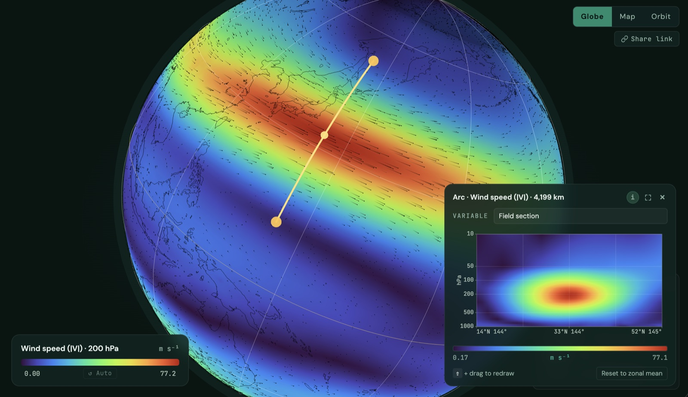
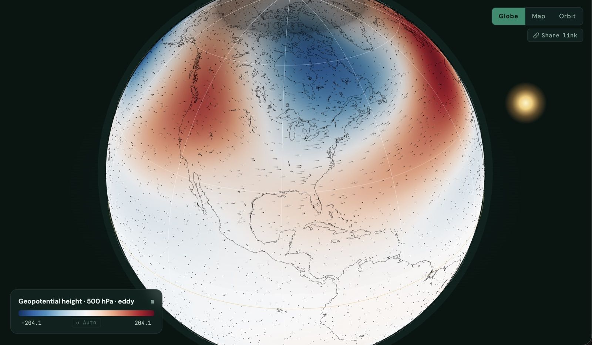
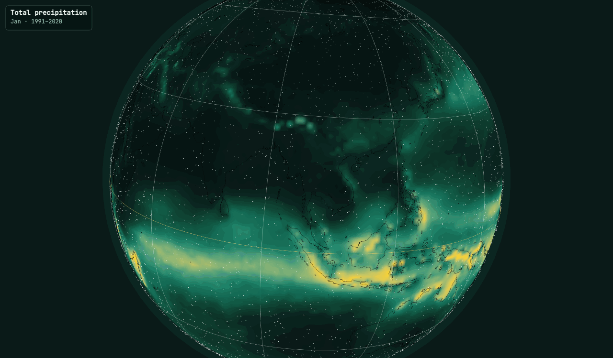
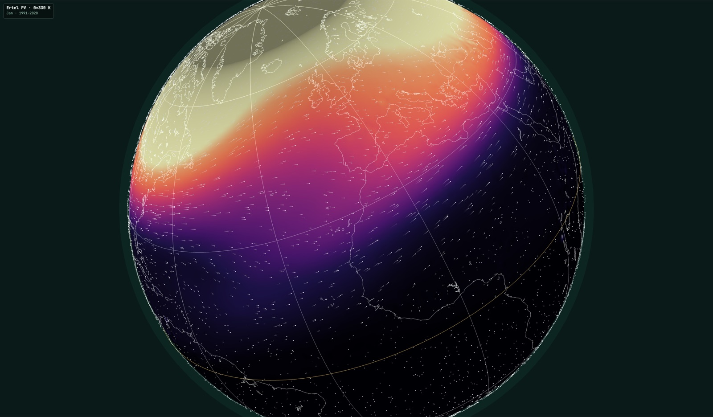
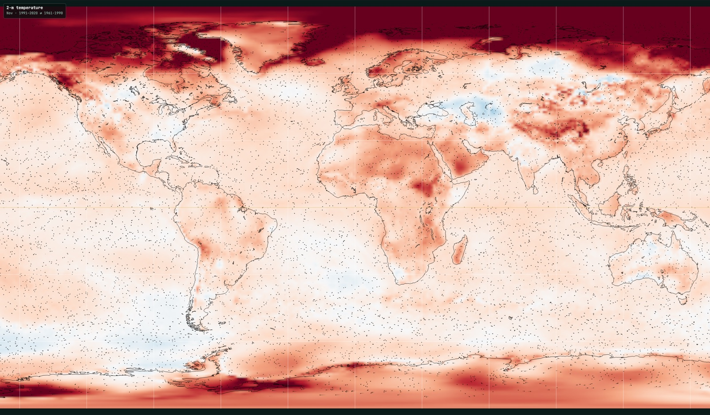
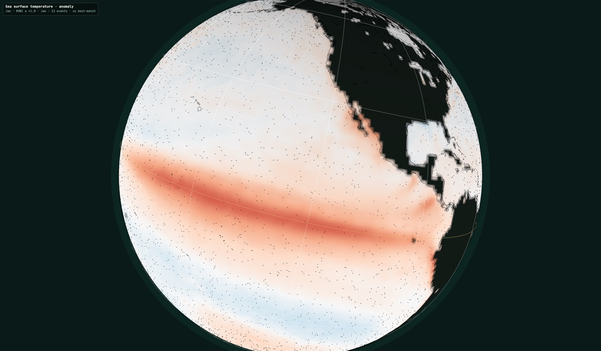
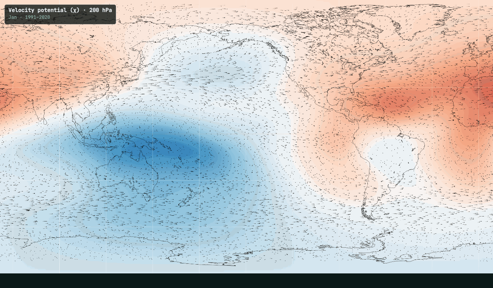
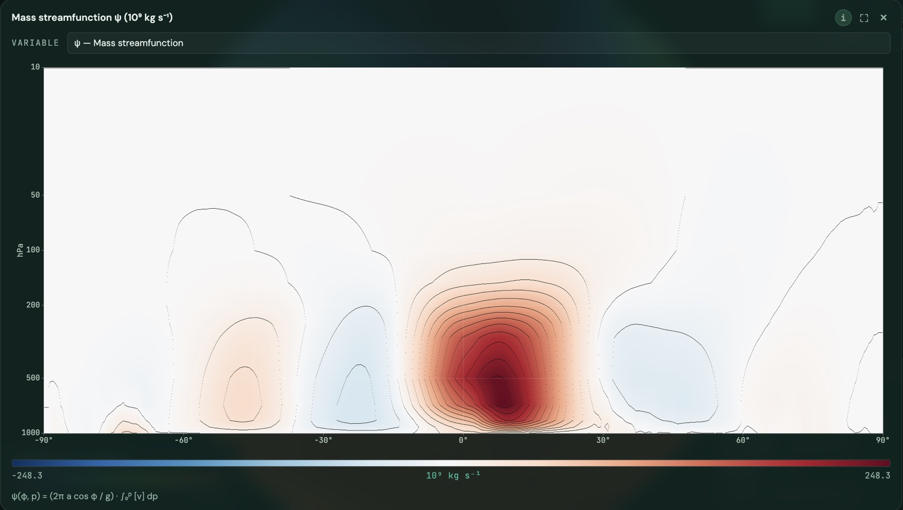

An interactive ERA5 atlas of the general circulation: Hadley cells, jet streams, stationary waves and the stratospheric vortex on a spinnable globe, on pressure or isentropic levels.

Each tile opens the atlas at a pre-configured view — field, level, month, decomposition, cross-section, all set. Every knob from there is still yours.









Storm-track bandpass variance, transient EP flux, the transient-eddy Lorenz cycle, MJO / ENSO / NAO composites. Every diagnostic currently labelled "stationary eddies only" will get a transient-eddy counterpart — the part of the circulation carried by the weather, not the climatology.
Swap ERA5 for CMIP6 climate projections (historical, or SSP585 end-of-century) to see the forced response. Overlay direct observations — GPCP precipitation, CERES radiation, OISST sea-surface temperature, ASCAT scatterometer winds. Paleoclimate runs for long-time-scale context.
Authored walkthroughs where the globe narrates itself — rotates, zooms, toggles fields, shifts months, paints a diagnostic, then moves on. "The Hadley cell," "monsoon reversal," "why is the Aleutian Low there?"
The atmospheric general circulation has historically been explored through textbook diagrams and static figures. GC-ATLAS replaces those with a live, observed, spinnable reference — the ERA5 base state across dozens of fields, on pressure or isentropic coordinates, with eight sliding 30-year climatologies spanning 1961 to 2025 and per-year data from 1961 to the present.
The atmospheric general circulation is famously hard to visualise. The concepts are three-dimensional, span the globe, evolve with the seasons, and can only be fully appreciated as decompositions — zonal mean versus eddy, stationary versus transient, rotational versus divergent. A static figure captures one slice of one of those decompositions, at one season, at one level. The real atmosphere is all of them at once.
GC-ATLAS makes every one of those slices one click away. Choose a 30-year climatology (1991–2020 or 1961–1990) or any single month from 1961 to the present. Toggle Mean ↔ ±1σ variability. Peel the stationary eddy off the zonal mean. Subtract one era's base state from another's to see the climate-change signal. Seed a Lagrangian parcel and watch it ride the monsoon anticyclone. Slice any cross-section; read off the Hadley cell strength or the EP-flux divergence or the moisture transport convergence.
It's for graduate students encountering the circulation for the first time, researchers sketching a hypothesis before opening a Jupyter notebook, educators pulling a figure for a slide deck, communicators explaining a weather-or-climate story, and anyone just curious what the jet stream actually looked like the week they were born.
It is the atmospheric sibling of TC-ATLAS, sharing its philosophy: free, open, and fast in the browser.